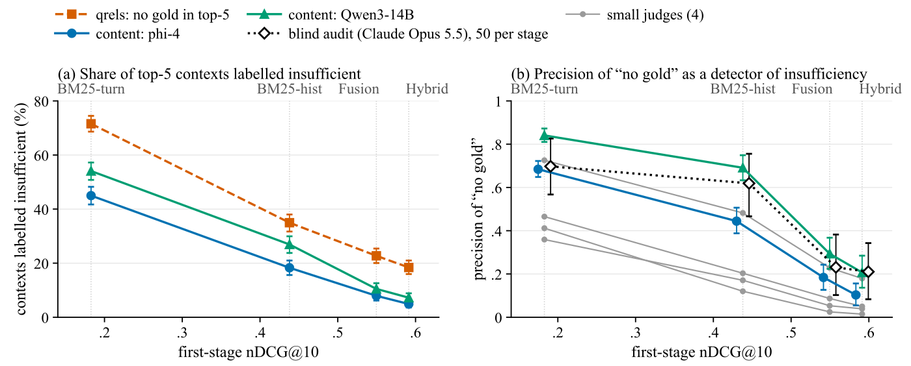
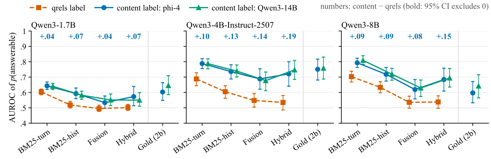
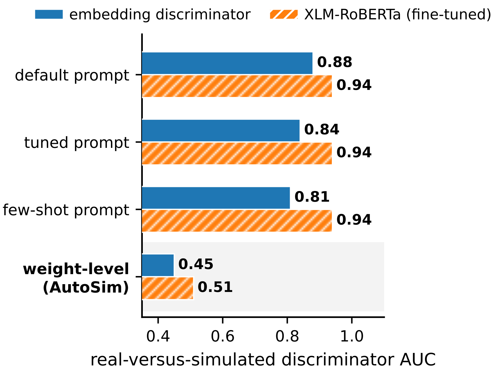
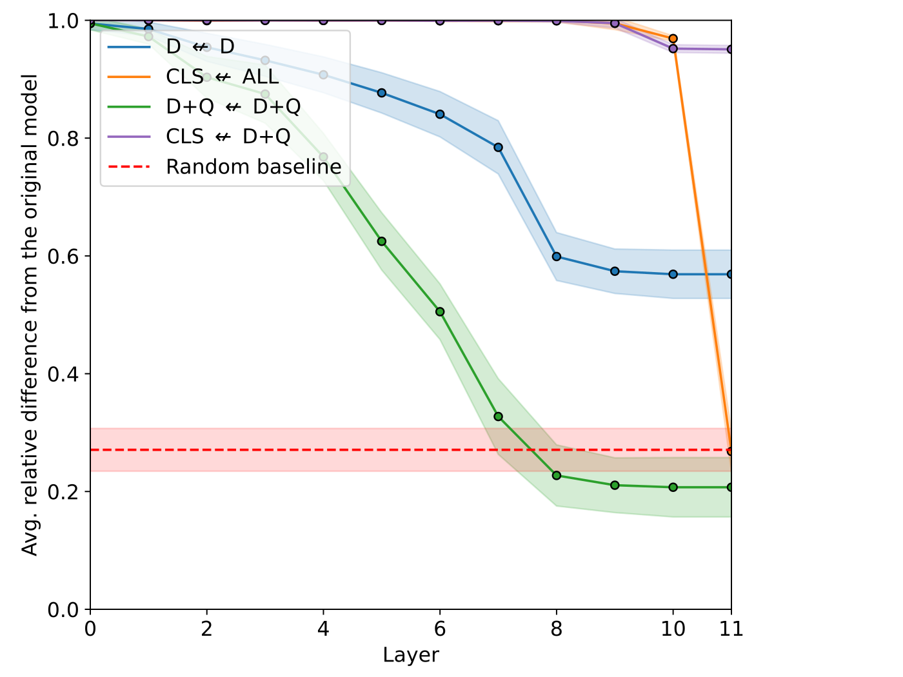
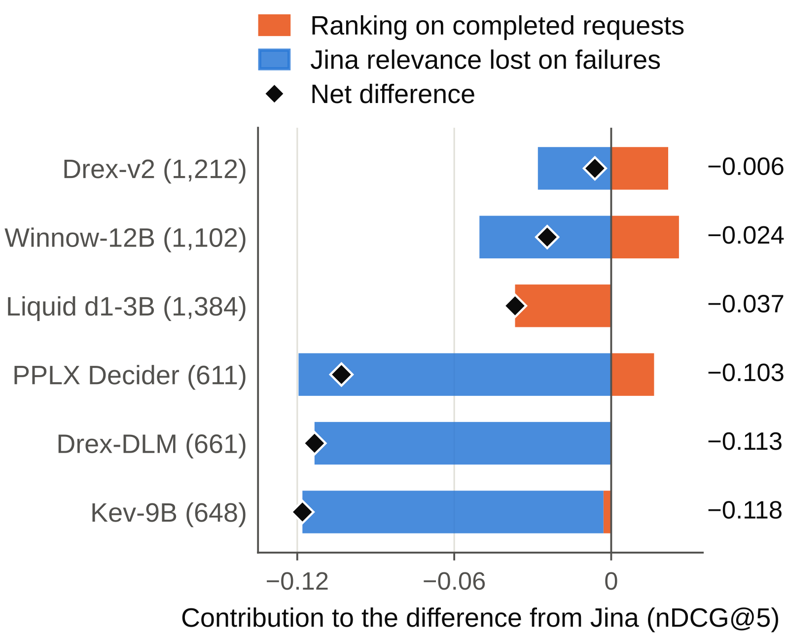
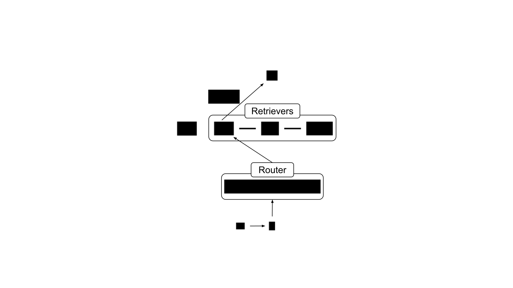
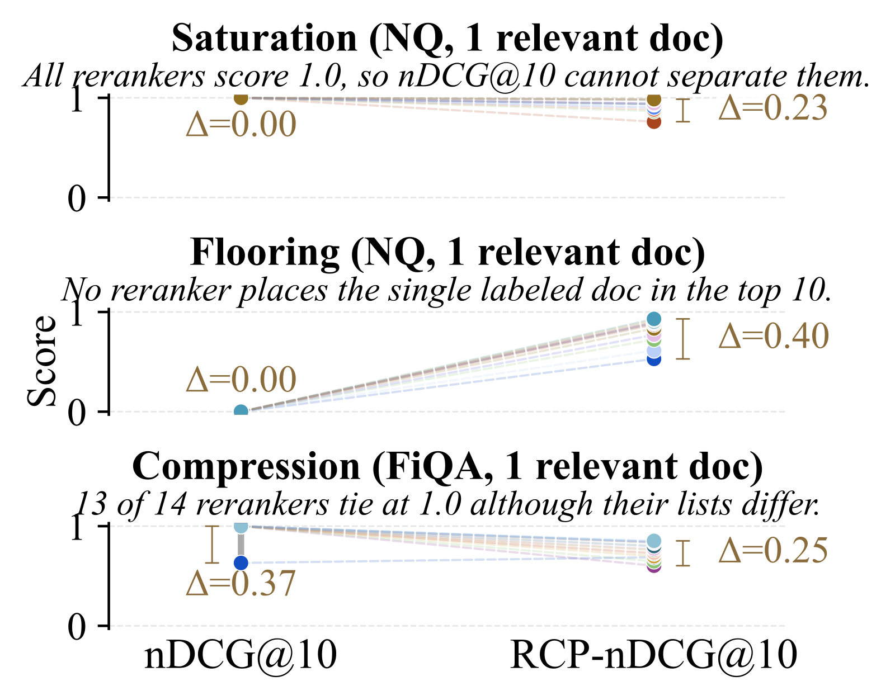
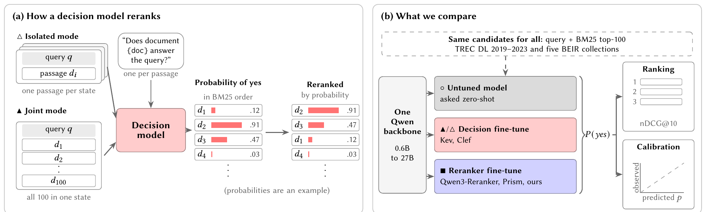

这篇论文发现，对话式 RAG 评测里一条常用的拒答打分规则，检索器越强就错得越厉害。这条规则是：评测打分时，如果检索结果里一篇标注过的相关文档都没有，评测方就把这一轮当作资料不够，拒答算对、作答算错。在 RECOR（一个多轮对话检索基准，问题来自 StackExchange 和 BRIGHT）上，从最弱到最强的四个检索器，被这条规则判为资料不够的上下文里，其实有答案的比例从 28% 升到 72%。这篇论文没有提出新模型，但如果你在做 RAG 评测，尤其是要给“拒答”打分，值得一读。它直接说明了现有打分会奖励错误的拒答。核心思想一句话：拒答该不该算对，要看检索回来的文本里有没有答案，而不是看有没有命中标注列表。
它到底在解决什么问题？
这篇论文指出，现在很多对话式 RAG 评测给“拒答”打分的方法有毛病：检索器越强，被冤枉扣分的反而越多。
要判断一次拒答是对是错，先得知道这一轮检索到的文档里有没有答案。没有答案时拒答，算对；有答案却拒答，算错。
麻烦在于，模型推理时只看文档，打分时评测方才要判断够不够。每一轮都请人去读文档太贵，于是常见的做法是借用现成的相关性标注：数据集里每个问题都事先标了几篇“相关文档”。评测方看检索回来的前 5 篇里有没有标过的相关文档，一篇都没有，就当作资料不够，这时拒答记对。
问题出在标注不全上。标注员只看过一部分文档，没看过的文档里也可能有答案。而强检索器恰好擅长把这些没被标过的有用文档找出来。
| 示意 | 检索器 A（弱） | 检索器 B（强） |
|---|---|---|
| top-5 里有标注相关文档吗 | 没有 | 没有 |
| top-5 内容里有答案吗 | 没有 | 有，在一篇未标注的文档里 |
| 模型拒答，按规则打分 | 对 | 对 |
| 模型拒答，按内容打分 | 对 | 错 |
论文图 1 是一个真实例子。用户问血糖仪为什么只测葡萄糖、不测蔗糖。检索回来的一篇文档写着，血糖仪靠葡萄糖氧化酶工作，只对 D-葡萄糖起反应，答案就在这里。但这篇文档在标注里没被标成相关，标过的那篇里有同样的话，只是没被检索到。照这条规则打分，模型照着文档答对了，反而被扣分；拒答的模型却得了分。
怎么证明规则在变坏
作者先把 RETECO（SemEval-2027 的对话检索评测任务，RECOR 是它的数据）官方的两个 BM25 基线原样重跑，nDCG@10 和公开结果对到小数点后四位，保证起点可信。然后搭了一个由弱到强的四级检索器梯子。最弱的两级是只用当前轮的 BM25（nDCG@10 为 0.183）和带对话历史的官方 BM25（0.438）。第三级是 Fusion（0.550）：让大模型把 query 扩写成三个版本：一是按 Query2doc 方法直接写一段相关段落，二是先改写问题再附一段段落，三是先改写问题再附一段 HyDE 式的假想答案；每个版本各跑一次 BM25；每路检索结果的分数先在这一路的候选文档里线性缩放到 0 到 1（最高分记 1、最低分记 0），再按文档把三路分数相加排序。最强的 Hybrid（0.591）在 Fusion 之外再加一路稠密向量检索（reason-embed-qwen3-4b）一起融合。论文没说明这一路稠密检索用哪个版本的问题去查、文档侧编码什么内容，也没说明它的分数怎样和 Fusion 的三路 BM25 分数合并。
每个检索器的每份 top-5 上下文都要有一个按内容判断的标签。做法是让一个裁判模型读对话、最后一个问题、参考答案和五篇文档，回答这些文档能不能支撑参考答案的核心内容：能、部分能、不能。主裁判是 phi-4，另一个不同系列的 Qwen3-14B 再标一遍，四个小模型也各标一遍。为了防止裁判本身偏宽松，还有一个不同系列的模型（Claude Opus 5.5）在不知道检索器、也不知道规则标签的情况下盲审了 250 份上下文，两轮独立标注后再由第三轮裁定。
有了内容标签，就能算规则作为答不了检测器的精确率。算精确率时只比较能和不能两类，部分能的上下文不计入。 Hoot 说

左右滑动或点箭头看三步。这篇论文的贡献是证明“top-5 里没有标注文档就答不了”这条规则在检索器变强后越来越不准。五份上下文和标签都是示意。 出处: 示意例子，对应论文 §3 标注与精确率定义
结果：检索器越强，规则越不可信
| 检索器 | nDCG@10 | 规则精确率（phi-4） | 规则精确率（盲审） | 假漏检比例 |
|---|---|---|---|---|
| BM25-turn | 0.183 | 0.68 | 0.70 | 28% |
| BM25-hist | 0.438 | 0.44 | 0.62 | 45% |
| Fusion | 0.550 | 0.18 | 0.23 | 68% |
| Hybrid | 0.591 | 0.10 | 0.21 | 72% |
表里的假漏检（论文叫 false miss），指规则判为答不了、裁判却认为内容足够回答的上下文。分母是规则判为答不了的全部上下文，分子只算裁判明确判为能的那些。从最弱到最强，这个比例从 28% 涨到 72%；把部分能也算进去，是从 39% 涨到 92%。这说明在强检索器上，规则说答不了的上下文里，大多数其实能答。
精确率下跌有一部分来自基数变化：强检索器上，内容裁判判为真正答不了的上下文本来就少（从 386 份降到 42 份），于是在规则判为答不了的那些里，假漏检自然占了多数。但作者另算了一个不受基数影响的指标 Youden's J（召回率减误报率），它也从 0.52 降到 0.15。也就是说，精确率下跌不只是因为强检索器上真正答不了的上下文变少了，规则本身区分能答和不能答的能力也在变差。

有人会怀疑是裁判太宽松。作者用了几道检查。第一道完全不用裁判：如果检索回来的文档和标注相关文档几乎逐字相同，它按标注自己的标准就该算相关，只是换了个文档编号。光这一类，就占 Fusion 上被规则判为答不了的上下文的 16.4%，是规则出错比例的下限。第二道是阴性对照：给每一轮配上另一段对话的检索结果，phi-4 只把 4.1% 判为足够，说明它不是什么都放行。
最有说服力的是第三道，让答题模型自己说话。Qwen3-4B 在假漏检上下文上答对 62% 到 67%；在真正答不了的上下文上只答对 23% 到 30%；同样的问题不给文档时只答对 1%。答对的答案来自检索到的文档，而不是模型自己记得。这说明假漏检里确实有答案。
假漏检里的答案从哪来？在 Fusion 上，41% 来自基准为同一个问题挖出来、当作干扰项放进库里的难负例；14% 来自标注文档的近似副本；19% 来自同一段对话里另一轮的标注文档；13% 来自标注文档所在页面的相邻片段。也就是说，假漏检里的答案大多就在同一段对话附近的文档里；不过这类文档本来就占这些上下文里全部文档的七成多，所以这只说明答案藏在哪，不说明干扰项普遍含答案。
换了标签，结论会变
规则不只是数字偏了，它会改变谁看起来更好。
第一，答题模型区分能答和不能答的能力被低估了。模型在第一行会输出能答或不能答，作者取模型生成第一个 token 时，输出能答这个标签的概率，作为它对这份上下文的打分，再用这个分数算 AUROC。在 Hybrid 上，按规则打分，三个模型都接近随机（0.50 到 0.54）；按内容打分，Qwen3-4B 有 0.72。

第二，最好的检测器变了。按规则打分，最好的答不了检测器是检索器自己的 top-1 分数，它根本不读文档内容。原因很直接：规则记录的就是检索器有没有找到标注文档，检索器自己的置信度当然最能预测这件事。按内容打分，答题模型自己的判断在每个检索器上都排第一，只是在 Fusion 和 Hybrid 上领先不显著。
第三，作者把一个端到端研究通常会报告的比较全部列出来，包括拒答率和 AUROC 在不同检索器之间、不同答题模型之间的比较，拒答率在能答和不能答的上下文之间差多少，AUROC 是否显著高于随机等，共 258 个。换成内容标签后，有 75 个的方向或显著性变了，其中 13 个方向直接反过来。换另一个内容裁判只变 25 个，没有一个反向。这些比较没有做多重检验校正，作者也说这个数字只反映影响的范围。
在 MTRAG（另一个多轮 RAG 基准，相关性由真人标注员在和检索系统对话时标出）上，规则精确率也从 0.72 降到 0.50。MTRAG 没有挖出来的难负例，标注来自真人，所以问题不只出在 RECOR 的构造方式上。
我认为它的局限
第一，RECOR 上的内容标签全来自 LLM 裁判，而且所有裁判都看得到参考答案，可能一起对同主题文档偏宽松；假漏检大多落在没人看过的文档上，这部分没有任何人工核对，逐条一致性也只有中等（κ 0.38–0.49）。几个小模型裁判更宽松，有一个在阴性对照上把 30.7% 判为足够，作者只用它们确认趋势。
第二，检索器梯子只有四级，而且最强的 Hybrid 在 RECOR 上的 nDCG@10 也只有 0.591。更强的检索器会不会让问题更严重，论文的数据只能外推。
第三，Fusion 和 Hybrid 用到的 query 扩写来自闭源模型。只用其中一种扩写（让大模型先写一段假想答案再拿去做 BM25 检索）时，闭源模型生成的扩写 nDCG@10 是 0.546，换成开源模型重新生成只有 0.453，复现这两级需要用作者发布的扩写结果。
一个搜索团队可以怎么试
- 在自己的 RAG 评测集上，抽一两百份被判为没命中标注文档的检索结果，人工看一遍里面有没有答案。这一步最便宜，能直接算出自己现在的规则精确率。
- 如果精确率明显低于 0.7（论文里只有最弱的、只看当前轮的 BM25 才到这个水平），就为每份检索结果加一个内容标签，用两个不同系列的裁判模型，并先用别的问题的检索结果做阴性对照，确认裁判不会什么都放行。
- 换检索器做对比时，只用内容标签给拒答打分，并分检索器报告拒答率。
- 检查评测集里的难负例有没有答案，含答案的改标为相关，否则它们会持续惩罚更好的检索器。
结论
拒答该不该算对，只能看检索内容本身。跨检索器比较拒答，或者挑选答不了检测器，都不该用相关性标注推出来的标签；实在要用，就按检索器分别抽样审计它的精确率。
| 维度 | 评价 |
|---|---|
| 问题重要性 | 高。端到端 RAG 评测正在普及，拒答打分错了会直接奖励错误行为 |
| 方法创新性 | 中。没有新方法，价值在于系统地验证一条常用规则 |
| 实验证据 | 高。多个裁判、盲审、阴性对照和答题模型的作答指向同一趋势；但逐条一致性只有中等（κ 0.38–0.49），RECOR 上没有人工标注 |
| 工程成本 | 低到中。主要是给每份检索结果跑一次裁判模型 |
| 是否值得尝试 | 值得。先抽样人工检查自己的规则精确率 |
读完这篇，你觉得
夜读鸮记下了，谢谢你的反馈。
点一下即可，无需登录；再点一次撤回。只统计匿名次数，不记录你是谁。
相关论文RELATED

Retrieval · 2026-10-25AutoSim: A Self-Improving User Simulator for Conversational Search Evaluation让一个强 LLM 扮演搜索用户，一个没见过训练数据的判别器能以 AUC 0.88 认出它写的话。对话搜索用户模拟器 AutoSim 就是这样：它按检索效果给检索系统排的名次，和 NIST 官方评测的排名一致，说话却离真人很远。作者让模拟器朝真人自我改进：改提示词时，另一个模型对照真人行为的差距写出修改方案，评分器按各类差距（比如话太长太客气、不会省略前文说过的内容）在校准集上打分，不退步才保留；改模型权重时，先用真人话语微调，再反复挑出判别器认为最像人的生成话语继续微调。只改提示词，判别器 AUC 降不到 0.85 以下；改模型权重，AUC 降到 0.45。像不像人会改变评测结论，在真实用户检索效果很差的地方，靠提示词的模拟器把 nDCG 高估了 0.136。
Retrieval · 2026-11-03How BERT-based Cross-Encoders Model Relevance in Information Retrieval?基于 BERT 的 cross-encoder 是最准的重排模型之一，但它内部怎么判断相关一直说不清。论文在三个大小不同的模型、多个域内和域外数据集上追踪信息怎么流动，发现三个模型走的是同样的几个阶段：前中层先让 token 结合上下文，同时有专门的注意力头找 query 和文档之间的字面匹配；更深的层出现找语义匹配的头；最后这些信号汇到 query 的 token 和 [CLS] 上打分。细节则各不相同：三个模型把相关信号汇进 [CLS] 的方式不一样，MiniLM 甚至可能是在找“不相关”的证据。
Retrieval · 2026-10-28Can System-1-Style Decision Models Replace Dedicated Rerankers in RAG? A Systems Evaluation想用大模型替换 RAG 里的 reranker，这篇的结论是先把现有 reranker 调好。作者在相同候选上比较 27B 决策模型 PPLX Decider 和 0.6B 的 Jina v3.5：默认设置下 PPLX 只有 44.1% 的请求能正常返回，只看成功请求它更好，把失败算进来就明显落后。把输入预算平均分给每篇候选、只保留开头部分后，它能追平 Jina；可 Jina 用同样的截断方式，延迟就降到 245 ms，显存也只有它的零头。
Retrieval · 2026-10-29LTRR: Learning To Rank Retrievers for LLMsRAG 系统一般只接一个固定的检索器，但不同问题适合的检索器不同，有些问题干脆不检索、只靠模型自己答更好。这篇论文把选检索器当成排序问题：对每个训练问题，记下每个检索器让答案质量比不检索提高了多少，再训练一个排序模型给检索器排名，不检索也是候选之一。在六个由稀疏、稠密检索和不同重排组合出的检索器上，pairwise XGBoost 路由把答案正确率分从最好单一检索器的 0.5776 提到 0.5900，而每题都选对的上限是 0.7948。路由的收益是真实的，但离上限还很远，而且训练标签选哪种答案质量指标影响很大。
Retrieval · 2026-10-25Rubric-Calibrated Preferences: Cross-Query Calibration of LLM Judgments via Item Response Theory在作者评测的重排器上，NanoBEIR 有 45.6% 的查询，nDCG 分不出高下。根源在人工相关性标注稀疏、有噪声，只有几个离散等级。RCP 先让 LLM 每次读 10 篇文档打分，同一篇会进多个批次，批内一篇比另一篇高得越多，它越可能更相关，Bradley-Terry 模型据此合成每篇的总分。再让 LLM 对每篇回答五个由易到难的是或否问题，从是否切题一直问到是否深入回答了查询。再借助项目反应理论把总分平移、缩放成能力值，能力值比题目难度高得越多，预测通过率越高；题目难度各查询共用，只有平移和缩放按查询拟合到贴近实际回答，不同查询的分数就落到同一把尺子上。以外部标注员的盲评为准，RCP 把有用文档排在无用文档前面的概率做到 0.910，原来的人工标注只有 0.651。
Retrieval · 2026-10-27System One models Are Not Better Rerankers拿新出的决策模型给检索结果重新排序，并不比专门微调的重排序模型好，这是帕绍大学这篇论文的结论。决策模型也叫 System One 模型，对一个问题直接给出校准过的“是”的概率，不生成文字，刚发布几周就被拿去做重排序。论文用同一个底座比较两种微调：决策微调用各类是非题训练模型给出准确的概率，重排序微调则只用 MS MARCO 的查询和段落训练模型判断段落是否相关。在六个不同大小的 Qwen 底座和十个 TREC DL、BEIR 数据集上，中小规模时重排序微调在每个底座上都赢，9B 及以下 nDCG@10 高出 5 到 29 分，到 27B 两者打平。这个规模以下，决策微调并不比直接问未微调的原模型更好。作者的结论很直白：需要重排序模型，就按重排序来微调。
讨论
欢迎补充实验细节、复现经验或不同看法。需 GitHub 登录。
正在加载讨论…